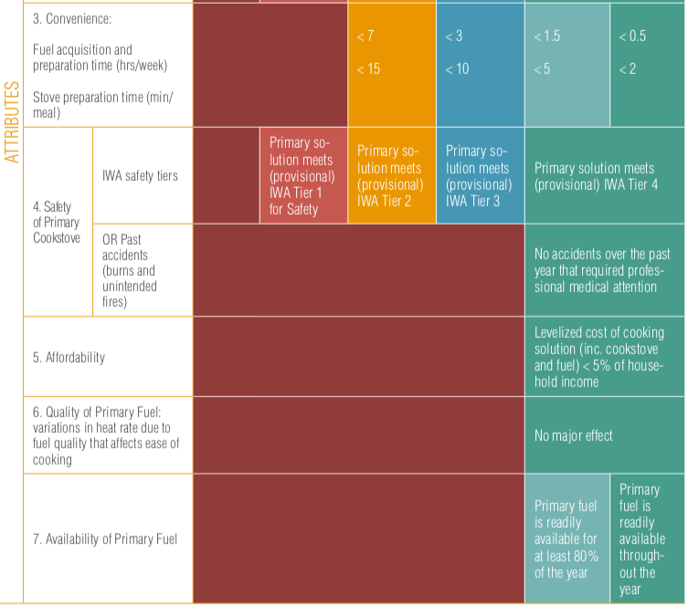

Measuring Energy Access: the Multi-Tier Framework¶
The importance of measuring energy access¶
The concept and measurement of access to energy are of utmost importance to governments and development agencies in order to develop and adapt appropriate policies and programs to achieve global objectives. The Sustainable Energy for All initiative (SE4All) launched by the Secretary General of the United Nations in 2011 aims to achieve universal access to modern energy services by 2030. The Sustainable Development Goal (SDG) number 7, adopted in 2015 by all nations, aims to ensure access to affordable, safe, sustainable and modern energy for all by 2030. Worldwide, it is estimated that more than two billion people lack access to modern energy.
To monitor progress towards the goals of access to energy for all, the Energy Sector Management Assistance Program (ESMAP) of the World Bank and the International Energy Agency, leading a consortium of 23 international agencies, have established the Global Monitoring Framework of SE4All (Global Track Framework - GTF), which describes how to measure the baseline and progress towards the goals of the SE4All by regularly collecting energy data.
ESMAP, under the SE4ALL initiative and in consultation with multiple development partners, has developed the Multi-Tier Framework (MTF) to monitor and evaluate access to energy following a multidimensional methodology.
A multidimensional definition of access to energy¶
The MTF redefines energy access from traditional binary accounting (connected or not connected, cooking with firewood or not) to a multidimensional concept that considers whether energy services are adequate, available when necessary, reliable, of good quality, convenient, affordable, legal, healthy, and safe for all.
As a result, having an electrical connection does not necessarily mean having access to electricity according to the new definition, since other aspects such as reliability and affordability, among other attributes, are considered. Thus, access to energy is measured across a spectrum of levels, from Level 0 (Tier 0) (without access) to Level 5 (Tier 5) (the highest level of access).
Ranking matrix to evaluate access to electricity supply¶
Access to electricity is measured based on standards (attributes) with multiple levels, independent from the energy technology. The relevant attributes for evaluating household access to electricity supply are:
Capacity: What appliances can the household use?
Duration (including daily supply and night supply): Is the power source available when the household needs it?
Reliability: Is electricity service interrupted frequently?
Quality: Does the fluctuation of the voltage damage the appliances?
Affordability: Can the household afford to buy the minimum amount of electricity?
Legality: Is the service provided formally or informally?
Health and Safety: Is it safe to use the electricity service, or are the household members risking their health if they use the service?
Each attribute is evaluated separately, and the general level for household access to electricity is calculated by applying the lowest level obtained in any of the attributes. That is, the attribute with the lowest rating determines the overall household access to electricity supply level (tier).

Ranking matrix to evaluate access to energy services¶
The MTF methodology defines a separate framework for measuring access to electricity services. A gradual improvement in the electricity supply allows greater and better access to different appliances for different needs. Thus, in a second matrix that measures access to electricity services, the categorization is done according to the type of appliances used in the home. A household may obtain different rankings in household access to electricity supply and access to electricity services, reflecting the availability of appliances despite poor supply or inability to purchase appliances (or high consumption of electricity) despite adequate supply.

Ranking matrix to evaluate access to modern cooking solutions¶
The multi-level framework for measuring access to cooking solutions is based on seven attributes: (i) health (based on indoor air pollution), (ii) convenience (based on fuel collection time and stove preparation time), (iii) safety, (iv) affordability (including expenditure on stoves and fuel), (v) efficiency, (vi) quality, and (vii) availability. In this methodology, a cooking solution refers to the combination of cooking equipment and fuel. A cooking solution includes all the cooking solutions that are used, as well as the place of cooking and ventilation.
Data on access to cooking solutions, such as ventilation, the quality of the fuel used, convenience, availability, and affordability can be collected through household surveys. Other parameters, such as indoor air quality and efficiency, can be better measured through supply side data based on laboratory tests or estimations based on mathematical models.
Affordability: Can the household pay for both the cooking equipment and fuel?
Convenience: How long does it take the household to get and prepare fuel for cooking before a person in the household can cook?
Availability: Is the fuel available when the household needs it to cook?
Quality: Does the quality of the fuel affect cooking?
Safety: Is it safe to use the kitchen, or is the person exposed to potential safety risks? Have accidents occurred in the past due to the use of fuel?
The standards for the measurement of multiple attributes to describe household access to cooking solutions are summarized in the following table. The lowest level among all the attributes determines the household’s overall level of access to cooking solutions.
